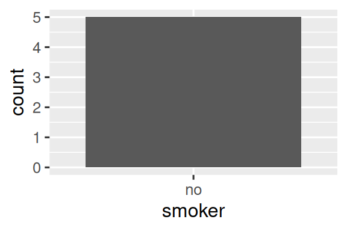
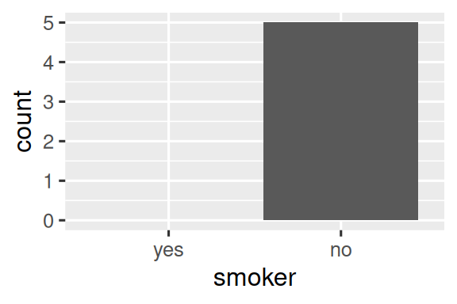

18 Valores faltanres
18.1 Introducción
Ya aprendiste los conceptos básicos de los valores faltantes anteriormente en el libro. Los vio por primera vez en Capítulo 1, donde resultaron en una advertencia al hacer un gráfico, así como en Sección 3.5.2, donde interfirieron con el cálculo de estadísticas de resumen, y aprendió sobre su naturaleza infecciosa y cómo verificar su presencia en Sección 12.2.2. Ahora volveremos a ellos con más profundidad, para que pueda conocer más detalles.
Comenzaremos discutiendo algunas herramientas generales para trabajar con valores faltantes registrados como NAs. Luego, exploraremos la idea de valores que faltan implícitamente, los valores que simplemente están ausentes de sus datos, y mostraremos algunas herramientas que puede usar para hacerlos explícitos. Terminaremos con una discusión relacionada con los grupos vacíos, causados por niveles de factores que no aparecen en los datos.
18.1.1 Requisitos previos
Las funciones para trabajar con datos faltantes provienen principalmente de dplyr y tidyr, que son miembros centrales de tidyverse.
18.2 Valores perdidos explícitos
Para comenzar, exploremos algunas herramientas útiles para crear o eliminar valores explícitos que faltan, es decir, celdas en las que ve un NA.
18.2.1 Última observación llevada adelante
Un uso común para los valores faltantes es como una comodidad para la entrada de datos. Cuando los datos se ingresan a mano, los valores que faltan a veces indican que el valor en la fila anterior se ha repetido (o trasladado):
treatment <- tribble(
~person, ~treatment, ~response,
"Derrick Whitmore", 1, 7,
NA, 2, 10,
NA, 3, NA,
"Katherine Burke", 1, 4
)Puede completar estos valores faltantes con tidyr::fill(). Funciona como select(), tomando un conjunto de columnas:
treatment |>
fill(everything())
#> # A tibble: 4 × 3
#> person treatment response
#> <chr> <dbl> <dbl>
#> 1 Derrick Whitmore 1 7
#> 2 Derrick Whitmore 2 10
#> 3 Derrick Whitmore 3 10
#> 4 Katherine Burke 1 4Este tratamiento a veces se denomina “última observación realizada”, o locf (del inglés “last observation carried forward”) para abreviar. Puede usar el argumento .direction para completar los valores faltantes que se han generado de formas más exóticas.
18.2.2 Valores fijos
Algunas veces, los valores faltantes representan algún valor fijo y conocido, más comúnmente 0. Puedes usar dplyr::coalesce() para reemplazarlos:
A veces te encontrarás con el problema opuesto en el que algún valor concreto en realidad representa un valor faltante. Por lo general, esto surge en los datos generados por un software antiguo que no tiene una forma adecuada de representar los valores faltantes, por lo que debe usar algún valor especial como 99 o -999.
Si es posible, maneje esto cuando lea los datos, por ejemplo, usando el argumento na para readr::read_csv(), p.ej., read_csv(ruta, na = "99"). Si descubre el problema más tarde, o su fuente de datos no proporciona una forma de manejarlo, puede usar dplyr::na_if():
18.2.3 NaN
Antes de continuar, hay un tipo especial de valor faltante que encontrará de vez en cuando: un NaN (pronunciado “nan”), del inglés not a nnumber. No es tan importante saberlo porque generalmente se comporta como NA:
En el raro caso de que necesites distinguir un NA de un NaN, puedes usar is.nan(x).
Por lo general, encontrará un NaN cuando realice una operación matemática que tenga un resultado indeterminado:
0 / 0
#> [1] NaN
0 * Inf
#> [1] NaN
Inf - Inf
#> [1] NaN
sqrt(-1)
#> Warning in sqrt(-1): NaNs produced
#> [1] NaN18.3 Valores perdidos implícitos
Hasta ahora hemos hablado de los valores que faltan explícitamente, es decir, puede ver un NA en sus datos. Pero los valores faltantes también pueden faltar implícitamente, si una fila completa de datos simplemente está ausente de los datos. Ilustremos la diferencia con un conjunto de datos simple que registra el precio de algunas acciones cada trimestre:
Este conjunto de datos tiene dos observaciones faltantes:
Falta explícitamente el
precioen el cuarto trimestre de 2020, porque su valor esNA.El ‘precio’ para el primer trimestre de 2021 falta implícitamente, porque simplemente no aparece en el conjunto de datos.
Una forma de pensar en la diferencia es con este koan de estilo zen:
Un valor perdido explícito es la presencia de una ausencia.
Un valor perdido implícito es la ausencia de una presencia.
A veces, desea hacer explícitos los faltantes implícitos para tener algo físico con lo que trabajar. En otros casos, la estructura de los datos le impone faltas explícitas y desea deshacerse de ellas. Las siguientes secciones discuten algunas herramientas para moverse entre faltantes implícitos y explícitos.
18.3.1 Pivotar
Ya ha visto una herramienta que puede hacer explícitas las faltas implícitas y viceversa: pivotar. Ampliar los datos puede hacer que los valores faltantes implícitos sean explícitos porque cada combinación de filas y columnas nuevas debe tener algún valor. Por ejemplo, si hacemos pivotar stocks para colocar el qtr en las columnas, ambos valores faltantes se vuelven explícitos:
stocks |>
pivot_wider(
names_from = qtr,
values_from = price
)
#> # A tibble: 2 × 5
#> year `1` `2` `3` `4`
#> <dbl> <dbl> <dbl> <dbl> <dbl>
#> 1 2020 1.88 0.59 0.35 NA
#> 2 2021 NA 0.92 0.17 2.66De forma predeterminada, hacer que los datos duren más tiempo conserva los valores faltantes explícitos, pero si son valores faltantes estructuralmente que solo existen porque los datos no están ordenados, puede descartarlos (hacerlos implícitos) configurando values_drop_na = TRUE. Consulte los ejemplos en Sección 5.2 para obtener más detalles.
18.3.2 Completo
tidyr::complete() te permite generar valores perdidos explícitos proporcionando un conjunto de variables que definen la combinación de filas que deberían existir. Por ejemplo, sabemos que todas las combinaciones de year y qtr deben existir en los datos de stocks:
stocks |>
complete(year, qtr)
#> # A tibble: 8 × 3
#> year qtr price
#> <dbl> <dbl> <dbl>
#> 1 2020 1 1.88
#> 2 2020 2 0.59
#> 3 2020 3 0.35
#> 4 2020 4 NA
#> 5 2021 1 NA
#> 6 2021 2 0.92
#> # ℹ 2 more rowsPor lo general, llamará a complete() con los nombres de las variables existentes, completando las combinaciones que faltan. Sin embargo, a veces las variables individuales están incompletas, por lo que puede proporcionar sus propios datos. Por ejemplo, es posible que sepa que se supone que el conjunto de datos de stocks se ejecutará desde 2019 hasta 2021, por lo que podría proporcionar explícitamente esos valores para year:
stocks |>
complete(year = 2019:2021, qtr)
#> # A tibble: 12 × 3
#> year qtr price
#> <dbl> <dbl> <dbl>
#> 1 2019 1 NA
#> 2 2019 2 NA
#> 3 2019 3 NA
#> 4 2019 4 NA
#> 5 2020 1 1.88
#> 6 2020 2 0.59
#> # ℹ 6 more rowsSi el rango de una variable es correcto, pero no todos los valores están presentes, puede usar full_seq(x, 1) para generar todos los valores desde min(x) hasta max(x) separados por 1.
En algunos casos, el conjunto completo de observaciones no puede generarse mediante una simple combinación de variables. En ese caso, puede hacer manualmente lo que complete() hace por usted: crear un marco de datos que contenga todas las filas que deberían existir (usando cualquier combinación de técnicas que necesite), luego combínelo con su conjunto de datos original con dplyr ::full_join().
18.3.3 Uniones
Esto nos lleva a otra forma importante de revelar observaciones que faltan implícitamente: las uniones. Aprenderá más sobre las uniones en Capítulo 19, pero queríamos mencionarlas rápidamente aquí, ya que a menudo solo puede saber que faltan valores en un conjunto de datos cuando lo compara con otro.
dplyr::anti_join(x, y) es una herramienta particularmente útil aquí porque selecciona solo las filas en x que no tienen una coincidencia en y. Por ejemplo, podemos usar dos anti_join()s para revelar que nos falta información para cuatro aeropuertos y 722 aviones mencionados en flights:
library(nycflights13)
flights |>
distinct(faa = dest) |>
anti_join(airports)
#> Joining with `by = join_by(faa)`
#> # A tibble: 4 × 1
#> faa
#> <chr>
#> 1 BQN
#> 2 SJU
#> 3 STT
#> 4 PSE
flights |>
distinct(tailnum) |>
anti_join(planes)
#> Joining with `by = join_by(tailnum)`
#> # A tibble: 722 × 1
#> tailnum
#> <chr>
#> 1 N3ALAA
#> 2 N3DUAA
#> 3 N542MQ
#> 4 N730MQ
#> 5 N9EAMQ
#> 6 N532UA
#> # ℹ 716 more rows18.3.4 Ejercicios
- ¿Puedes encontrar alguna relación entre el portaaviones y las filas que parecen faltar en
planes?
18.4 Factores y grupos vacíos
Un último tipo de ausencia es el grupo vacío, un grupo que no contiene ninguna observación, que puede surgir cuando se trabaja con factores. Por ejemplo, imagina que tenemos un conjunto de datos que contiene información sobre la salud de las personas:
Y queremos contar el número de fumadores con dplyr::count():
health |> count(smoker)
#> # A tibble: 1 × 2
#> smoker n
#> <fct> <int>
#> 1 no 5Este conjunto de datos solo contiene no fumadores, pero sabemos que existen fumadores; el grupo de no fumadores está vacío. Podemos solicitar a count() que mantenga todos los grupos, incluso aquellos que no se ven en los datos usando .drop = FALSE:
health |> count(smoker, .drop = FALSE)
#> # A tibble: 2 × 2
#> smoker n
#> <fct> <int>
#> 1 yes 0
#> 2 no 5El mismo principio se aplica a los ejes discretos de ggplot2, que también eliminarán los niveles que no tengan ningún valor. Puede obligarlos a que se muestren proporcionando drop = FALSE en el eje discreto apropiado:
ggplot(health, aes(x = smoker)) +
geom_bar() +
scale_x_discrete()
ggplot(health, aes(x = smoker)) +
geom_bar() +
scale_x_discrete(drop = FALSE)

El mismo problema surge de manera más general con dplyr::group_by(). Y de nuevo puedes usar .drop = FALSE para conservar todos los niveles de los factores:
health |>
group_by(smoker, .drop = FALSE) |>
summarize(
n = n(),
mean_age = mean(age),
min_age = min(age),
max_age = max(age),
sd_age = sd(age)
)
#> # A tibble: 2 × 6
#> smoker n mean_age min_age max_age sd_age
#> <fct> <int> <dbl> <dbl> <dbl> <dbl>
#> 1 yes 0 NaN Inf -Inf NA
#> 2 no 5 60 34 88 21.6Aquí obtenemos algunos resultados interesantes porque al resumir un grupo vacío, las funciones de resumen se aplican a vectores de longitud cero. Hay una distinción importante entre los vectores vacíos, que tienen una longitud de 0, y los valores faltantes, cada uno de los cuales tiene una longitud de 1.
Todas las funciones de resumen funcionan con vectores de longitud cero, pero pueden devolver resultados sorprendentes a primera vista. Aquí vemos que mean(age) devuelve NaN porque mean(age) = sum(age)/length(age) que aquí es 0/0. max() y min() devuelven -Inf e Inf para vectores vacíos, por lo que si combina los resultados con un vector no vacío de nuevos datos y vuelve a calcular, obtendrá el mínimo o el máximo de los nuevos datos[^ valores perdidos-1].
A veces, un enfoque más simple es realizar el resumen y luego hacer explícitas las faltas implícitas con complete().
health |>
group_by(smoker) |>
summarize(
n = n(),
mean_age = mean(age),
min_age = min(age),
max_age = max(age),
sd_age = sd(age)
) |>
complete(smoker)
#> # A tibble: 2 × 6
#> smoker n mean_age min_age max_age sd_age
#> <fct> <int> <dbl> <dbl> <dbl> <dbl>
#> 1 yes NA NA NA NA NA
#> 2 no 5 60 34 88 21.6El principal inconveniente de este enfoque es que obtienes un NA para el conteo, aunque sabes que debería ser cero.
18.5 Resumen
¡Los valores perdidos son raros! A veces se registran como un ‘NA’ explícito, pero otras veces solo se notan por su ausencia. Este capítulo le ha brindado algunas herramientas para trabajar con valores perdidos explícitos, herramientas para descubrir valores perdidos implícitos y discutido algunas de las formas en que lo implícito puede volverse explícito y viceversa.
En el siguiente capítulo, abordamos el último capítulo de esta parte del libro: las uniones. Este es un pequeño cambio con respecto a los capítulos hasta ahora porque vamos a discutir las herramientas que funcionan con marcos de datos como un todo, no algo que se coloca dentro de un marco de datos.